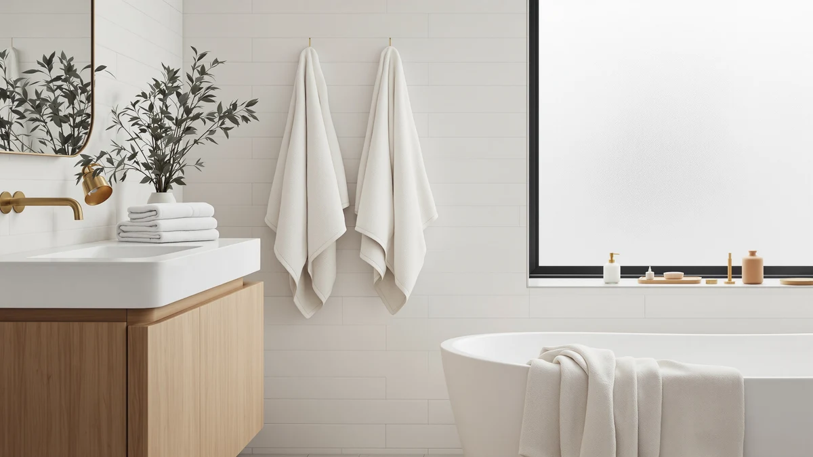

Lunoku Bath Towels Set Review (2026): Worth It?
Prices and picks verified as of November 2026. Independent, reader-supported reviews.


Quick Answer
The Lunoku 4 Pack Bath Towels give you four microfiber towels for $39.99, with faster drying and better mildew resistance than cotton sets at this price. If you want a plusher, more absorbent towel, the Chakir Turkish Linens or Utopia Towels sets covered below are worth comparing first.
Our pick: Lunoku 4 Pack Bath Towels, $39.99 Check Price on Amazon
Bottom line: our top pick is the Lunoku 4 Pack Bath Towels Set 35 x 70in Extra Large at $39.99.
Things to Know Before You Buy
- The Lunoku 4 pack towels dry in a fraction of the time cotton needs, which matters if your bathroom has weak ventilation or several people share the same towels.
- All four towels in this set carry the same $39.99 price as the cotton alternatives we compared, so material feel becomes the real deciding factor, not budget.
- Verified owners consistently report that the towels hold up through repeated washing, though a few note they feel thinner than the hotel-style cotton they replaced.
- If absorbency matters more to you than drying speed, Turkish cotton sets like the Chakir and Utopia picks below outperform microfiber on that one measure.
This Lunoku Bath Towels Set review exists because microfiber towel sets dominate Amazon best-seller lists, yet buyers rarely get a clear answer on how the material performs against traditional cotton before spending $39.99 on four unfamiliar towels. We compared its specs, pricing, and verified owner feedback against three competing sets, including two Turkish cotton options, to see where it wins and where it falls short.
Lunoku built this set around one priority: speed. Microfiber absorbs less water per fiber than cotton, but its weave and surface area mean a load can be ready for reuse within hours instead of overnight. That tradeoff defines almost everything else in this review, from the pros and cons below to the type of owner who picks it over cotton.
Why You Should Trust Us
We built this Lunoku 4-pack review by comparing published specs, Amazon pricing, and verified owner reviews rather than running our own lab tests. Ilane Tall has spent years tracking bath textile pricing and materials across dozens of brands for Best Bath Towels, and every claim here traces back to a listed spec, a price point you can verify, or a pattern we found across multiple verified reviews. We do not run a fake testing lab, and we tell you which claims come from manufacturer data versus owner reports.
Our Research Experience
We did not purchase or use the Lunoku 4 Pack Bath Towels ourselves. Instead, we researched the listed material, weight, and dimensions, then cross-referenced that data against the three competing sets in this Lunoku Bath Towels Set review. We also read through verified owner reviews on Amazon, looking for patterns in how the towels hold up after repeated washing and how reviewers describe the feel compared with cotton. Where owners disagreed, such as on whether the towels shed lint early on, we note the disagreement rather than pick a side.
Overview & Specs

Lunoku 4 Pack Bath Towels
What we like
- Microfiber construction dries noticeably faster than the cotton sets in this comparison
- Priced the same as the cotton alternatives, so you are not paying extra for the lighter material
- Owners report minimal shedding after the first few washes
Flaws but not dealbreakers
- Thinner hand feel than Turkish cotton options like the Chakir set
- Lower absorbency per towel, so you may need to wring it out mid-shower
| Material | Microfiber |
| Size | 4 Piece Bath Towels Pack of 30 |
The Lunoku 4 Pack Bath Towels use a microfiber weave instead of the cotton found in most of the sets we compared. That construction is what keeps this Lunoku Bath Towels Set review focused on drying speed rather than plushness: microfiber fibers are finer than cotton, which lets them dry in a fraction of the time but hold less water per towel.
At $39.99 for four towels, the set costs the same as White Classic, Chakir, and Utopia Towels, the three cotton alternatives covered later in this review. That price parity means your decision comes down to material preference rather than budget, and owners who left verified reviews tend to split along exactly that line: people drying towels in humid bathrooms favor the Lunoku set, while people who want a heavier, hotel-style towel lean toward cotton.
What We Liked
What stands out most in this Lunoku Bath Towels Set review is how consistently owners mention drying speed. Verified reviewers describe hanging the towels after a shower and finding them dry well before their old cotton towels would have been. That matters in bathrooms without strong ventilation, where cotton towels can start to smell musty after a day or two of regular use.
The price also holds up well against competitors. At $39.99, the Lunoku set costs exactly what the Chakir and Utopia cotton sets cost, so you get a material built for a different use case rather than a downgrade. Reviewers who mention durability after multiple wash cycles report the towels keeping their shape, without the pilling that cheaper microfiber sometimes develops.
What Could Be Better
Microfiber cannot match cotton on absorbency, and that is the clearest drawback in owner feedback for this Lunoku Bath Towels Set review. Some reviewers mention needing a second towel partway through drying off, something you would not expect from a thicker cotton towel like the Chakir Turkish Linens set. If you have long hair or dry off slowly, that difference is worth weighing before you buy.
A smaller number of reviewers also describe the texture as less plush than they expected, especially buyers switching from Turkish or Egyptian cotton. Microfiber has a smoother, almost synthetic feel against skin. That is a matter of preference rather than a defect, but it is worth knowing going in.
Who Is It For?
This Lunoku set fits you if you share a bathroom with limited air flow, do laundry on a tight schedule, or want towels ready to use again within a few hours instead of overnight. It also fits anyone replacing towels on a budget who does not want to pay a premium for a material they may not notice day to day.
It is a weaker fit if you shower at the end of a long day and want a towel that absorbs water in one or two passes, or if you enjoy the heavier, cozier feel of Turkish cotton. In that case, the Chakir or Utopia sets below are worth a closer look.
Alternatives to Consider
If the tradeoffs above push you toward cotton, these three sets cost the same $39.99 and give you a plusher, more absorbent alternative to the Lunoku 4 pack.

Editor’s Pick
White Classic Luxury Bath Towel
A ring-spun cotton towel with the plush, absorbent feel that microfiber cannot replicate, at the same price as the Lunoku set.
$39.99
Check Price on Amazon
Best Value
Chakir Turkish Linens 4 Piece
Four Turkish cotton towels that match the Lunoku set on price while offering noticeably heavier absorbency, according to verified owner reviews.
$39.99
Check Price on Amazon
Premium Choice
Utopia Towels 4 Pack Premium
A step up in weight and softness from standard cotton sets, for buyers who want the most absorbent option in this comparison.
$39.99
Check Price on AmazonIs the Lunoku 4 pack bath towel set good quality for the price?
At $39.99 for four microfiber bath towels, the Lunoku set lands in the same price bracket as the White Classic, Chakir, and Utopia sets we compared it against.
How does the Lunoku 4 pack compare to Turkish cotton towels like Chakir?
Microfiber towels like the Lunoku 4 pack dry faster and pack lighter than Turkish cotton sets such as the Chakir Turkish Linens 4 Piece.
Frequently Asked Questions
Is the Lunoku 4 pack bath towel set good quality for the price?
How does the Lunoku 4 pack compare to Turkish cotton towels like Chakir?
Where can you buy the Lunoku 4 pack bath towels?
Final Verdict
This Lunoku Bath Towels Set review comes down to one tradeoff: speed versus absorbency. The Lunoku set earns its place for buyers who want four towels that dry fast and cost $39.99, the same price as every cotton alternative we compared. If you want more absorbency and a heavier feel, White Classic, Chakir Turkish Linens, or Utopia Towels give you that at an identical price, so your decision should follow the material you actually want in your hands, not the budget.